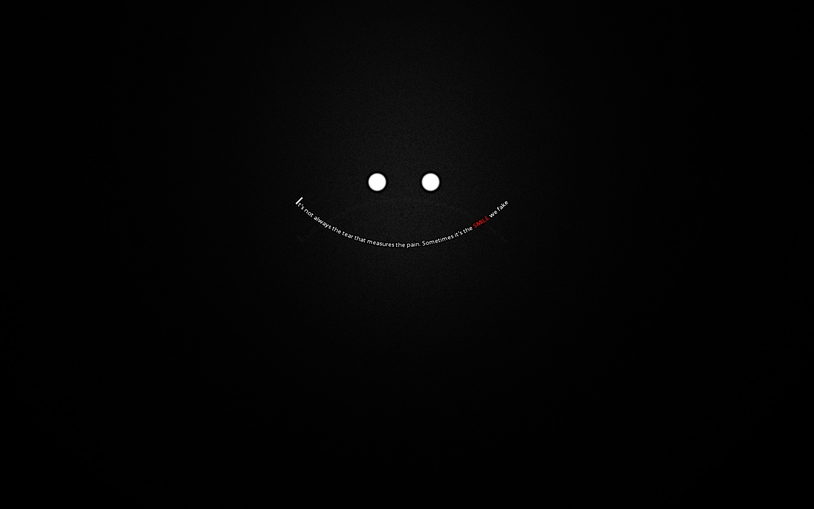

>Effzeh - Fußballtraum im Schatten des Doms
>FC St. Pauli - Die wahren Hamburger
>1. FC Köln - Mer wesse alles üvver dich
>Bayern München - reich und langweilig
>Borussia Mönchen Gladbach - unnützes Wissen
>Prinz Poldi - ne kölsche Jung
Mehr anzeigen
Zuletz gespielt
Das Station Quizz

Die größten bedeutensten, modernsten und wichtigsten Stadien der Welt. Kaum ist bei
großen Verienen so bedeutend wie das Stadion. Es ist nicht nur ein Statussymbol für
jeden erfolgreichen Verein, sondern oft auch ein Denkmal für große Ereignisse in der
Historie eines Vereins. Hier findest Fragen zu den Stadien der Welt. Auf geht´s!